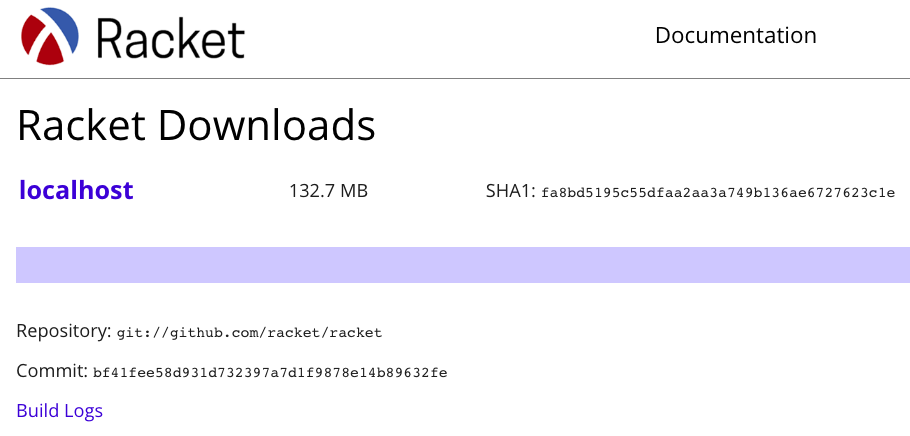

Running a pkg-build today
posted by Ben Greenman, Alex Knauth, and Fred Fu
Suppose you’ve made a change to Racket and want to test it against all packages in the main catalog. The pkg-build package can help, provided you have: (1) a modified version of Racket and (2) a sandbox VM to build packages on. This post explains how to meet these requirements.
Why pkg-build?
Backwards compatibility matters. New changes to packages in the Racket main distribution should not change old programs without a very good reason.
One way to assess the damages of a possibly-breaking change is to use the pkg-build package to compile and test every package registered in the main package catalog. If any package fails, the error message may suggest a way to improve the changes.
A build starts with a modified version of Racket and a sandbox virtual machine (VM). For every package in the catalog, pkg-build installs the package and its dependencies in a new environment on the VM. This way:
- packages that have conflicting dependencies get tested without interfering with one another,
- packages that require a huge amount of time or memory get killed,
- and cleanups/re-builds are easy.
Motivating Example: Typed Racket
As of February 2020, Typed Racket pull request #882 weakens the types derived from untyped predicates. This change fixes a soundness bug, but may raise type errors in programs that rely on the old behavior. See the pull request for details.
Since we recently ran pkg-build on a modified Typed Racket for that pull request, this post uses Typed Racket as a concrete example. If you copy/paste code below, look out for parts that need to be adapted for different changes.
How to Run pkg-build
There are four high-level steps to running a build: create a modified distribution of Racket, serve the distribution, configure a sandbox VM, and run. Eventually, your host machine will serve a page that resembles download.racket-lang.org; running pkg-build starts up the VM and installs Racket from that page.
Table of Contents
- Create a modified package catalog and Racket distribution
- Serve the modified Racket distribution
- (optional) Transfer files from the sandbox VM
- Serve site
- Create a sandbox VM and snapshot
- Build packages
Step 0: Create a new directory
Make a new directory for the build on your host machine. Use any name that you like.
mkdir ~/my-build
cd ~/my-buildStep 1: Create a modified package catalog and Racket distribution
The first step is to create a package catalog and a Racket distribution. The catalog points to the changes you want to test. The Racket distribution gets built once from this catalog and re-used on the VM to build packages.
Step 1a: (optional) Create a sandbox VM
A Racket distribution must be built on the same kind of operating system that uses the distribution. For example, if your host machine is running macOS and you plan to make a Linux VM, then skip to Step 3 and build the Racket distribution on the VM.
Step 1b: Copy a base catalog
Find a modern version of Racket. A nightly snapshot or recent source build work best. The latest release, or a slightly older build, may work.
Choose a name for a new directory, connect to the Internet, and run the following command using "raco" from the modern Racket.
raco pkg catalog-copy --from-config my-catalog/All done.
The example command above creates a new directory named my-catalog/ that contains:
- a directory
pkg/with one file inside for each package (over 2000 files), - a file
pkgsthat lists all package names, - and a big file
pkgs-allwith all the data from thepkg/directory.
Beware! The generated files, especially pkgs-all, have very long lines that may crash your favorite text editor. They overwhelmed gedit on our VM. These files are meant to be read by Racket programs — via read or file->value.
Step 1c: Edit the catalog
Delete the large file my-catalog/pkgs-all.
Ignore the my-catalog/pkgs file.
Figure out which names in the my-catalog/pkg/ directory relate to your changes. If you have a new commit for Typed Racket, then there are six relevant names because one commit to the Typed Racket repo affects six packages: source-syntax, typed-racket, typed-racket-doc, typed-racket-lib, typed-racket-more, and typed-racket-test.
Each name N correponds to a file my-catalog/pkg/N that contains metadata for a package, represented as a hashtable. Your goal is to update the 'source, 'checksum, and 'versions fields in each hashtable to point to your changes. The new 'source is the GitHub URL for your changes. The new 'checksum is the matching commit hash. The new 'versions must point to your changes as the default, un-exceptional source.
The script below can make these edits for Typed Racket, given:
tgt-useryour GitHub usernametgt-branchthe name of the public branch where your changes livetgt-committhe commit hash for your changes
edit-catalog.rkt
#lang racket/base
;; Usage:
;; racket edit-catalog.rkt my-catalog/
;; ---
;; TODO edit these variables
(define pkg*
'("source-syntax" "typed-racket" "typed-racket-doc"
"typed-racket-lib" "typed-racket-more" "typed-racket-test"))
(define tgt-repo "typed-racket")
(define tgt-branch "<branch-name>")
(define tgt-user "<username>")
(define tgt-commit "<commit-hash>")
;; ---
; format a GitHub package URL for a branch, see:
; https://docs.racket-lang.org/pkg/getting-started.html#(part._github-deploy)
(define (make-tgt-url pkg-name)
(format "git://github.com/~a/~a.git?path=~a#~a"
tgt-user tgt-repo pkg-name tgt-branch))
;; update three fields: '(source checksum versions)
(define (update-pkg-hash h pkg-name)
(define u (make-tgt-url pkg-name))
(let* ((h (hash-set h 'source u))
(h (hash-set h 'checksum tgt-commit))
(h (if (hash-has-key? h 'versions)
(hash-update
h 'versions
(lambda (vh)
(hash-set
vh 'default
(hash 'source u 'checksum tgt-commit 'source-url u))))
h)))
h))
;; edit one file
(define (update-pkg-file p pkg-name)
(let* ((h (with-input-from-file p read))
(h (update-pkg-hash h pkg-name)))
(with-output-to-file p #:exists 'replace (lambda () (writeln h)))))
(module+ main
(require racket/cmdline)
(command-line
#:args (cat-dir)
(for ((pkg-name (in-list pkg*)))
(define p (build-path cat-dir "pkg" pkg-name))
(update-pkg-file p pkg-name))))After running the script, you can test your edits by installing the package from this modified catalog directory. If you edited Typed Racket, the following update should be enough to preview your changes:
raco pkg update --catalog my-catalog --lookup typed-racket typed-racket-libMake sure to run tests after the update finishes.
Step 1d: Build Racket from the catalog
Clone a new copy of Racket and build using your modified catalog.
cd ~/my-build/
git clone git://github.com/racket/racket
cd racket
make site SRC_CATALOG=../my-catalogThis will take some time.
Note: make site must start from a clean repo. If something goes wrong along the way, make a new clone before retrying. Refer to the Racket Build Guide (aka build.md) for more information.
This command makes a new directory ~/my-build/racket/build/site/ with a few files, including:
build/site/installers/table.rktdmust contain a hashtable from strings to paths. Ours contains#hash(("localhost" . "racket-7.6.0.14-x86_64-linux.sh"))build/site/index.htmlshould resemble the picture below. For us, the link localhost points to an install script

Step 2: Serve the modified Racket distribution
The next step is to make the built Racket distribution available through a web server running on your host machine.
Step 2a: (optional) Transfer files from the sandbox VM
If you followed Step 1a and built the Racket site on the sandbox VM, then copy the build/site/ directory onto your host machine.
Step 2b: Serve site
Start a local web server to host the install. One way to run a server is with Python:
cd ~/my-build/racket/build/site
python3.7 -m http.server 8000If Python responds with a PermissionError, try changing 8000 to a different port number.
To double-check the server, open http://localhost:8000 in a web browser.
Step 3: Create a sandbox VM and snapshot
Install VirtualBox. Make sure the VBoxManage executable is on your path.
Create a VM, either using Vagrant according to the pkg-build/example/ README or manually. After following those instructions, you should have:
- a VM named
pkg-build, - with a user named
racketthat can runsudowithout a password, - with host-only networking enabled,
- and exactly one snapshot of the VM named
init.
Get the IP address of the VM. If you created a Linux VM, running hostname -I should print this address. Then, with the VM running, try the following command on your host machine to test the network connection — after replacing the sample address (192....) with your VM’s address:
ssh racket@192.168.99.100Running ssh for the first time may raise a yes/no prompt about the login. Type “y”. Future logins must succeed with no prompt.
Step 4: Build packages
The final step is to install pkg-build and point it to your web server and sandbox VM.
Step 4a: Set up pkg-build
Clone and install the pkg-build repo on your host machine.
cd ~/my-build
git clone git://github.com/racket/pkg-build
raco pkg install ./pkg-buildCreate a file named run.rkt that starts from the template in the pkg-build README. Edit this file:
- the vbox
#:hostmust match your VM’s IP address, - the
#:snapshot-urlmust point to your web server from Step 2c (likely http://localhost:8000), - the
#:installer-platform-namemust match a key in thesite/installers/table.rktdfile from Step 1d
Here is one run.rkt that we used for a successful build, after some trial and error with timeouts.
#lang racket/base
(require pkg-build)
(build-pkgs
#:vms (list (vbox-vm #:name "pkg-build" #:host "192.168.99.100"))
#:snapshot-url "http://0.0.0.0:8000"
#:timeout 2100
#:installer-platform-name "localhost")Step 4b: Build packages
Make sure the VM is off. Run the run.rkt file above; we recommend redirecting the output to a log:
cd ~/my-build
racket run.rkt >& pkg-build.logThis command should run for hours, starting and stopping the VM periodically. If all goes well, the final log will contain details on any new package errors.
If you cancel the build mid-way, restarting run.rkt should resume at approximately the same state. To restart from the beginning, delete the files that pkg-build generated in the current directory and re-run.
Example log output
Our log for a modified Typed Racket began with the following lines, and then proceeded to archive every package:
>> Getting installer table
Installer is racket-7.5.0.11-x86_64-linux.sh
>> Downloading installer racket-7.5.0.11-x86_64-linux.sh
>> Archiving packages from
http://0.0.0.0:8000/catalog/ https://pkgs.racket-lang.org/
== Archiving 1d6 ==
checksum: ae3bf1fc265bd1815dc8f9d6bbb153afdbf3a53d
Downloading repository https://github.com/jessealama/1d6.git
....Some package archives failed, for example:
== Archiving simple-csv ==
checksum: f71d9b92826203cacf483ab5b2379fd18f8585d3
Downloading repository git://github.com/pragun/simple-csv
git-checkout: could not parse ref pkt
pkt: "Repository not found.\n"
SKIPPING simple-csvBut most succeeded, including the Typed Racket packages.
After the archive, the build first tests the connection to the VM:
Creating catalog ~/my-build/server/archive/catalog
>> Starting server at locahost:18333 for ~/my-build/server/archive
>> Starting VM pkg-build
Stopping VirtualBox machine "pkg-build"
VBoxManage: error: Machine 'pkg-build' is not currently running
0%...10%...20%...30%...40%...50%...60%...70%...80%...90%...100%
Restoring snapshot 'init' (52bd14a8-783c-4e06-b60f-14730464f196)
Starting VirtualBox machine "pkg-build"
Waiting for VM "pkg-build" to power on...
VM "pkg-build" has been successfully started.
/usr/bin/ssh -R 18333:localhost:18333 racket@192.168.99.100
'/usr/bin/env' 'PLTUSERHOME=/home/racket/build-pkgs/user'
'PLT_PKG_BUILD_SERVICE=1' 'CI=true' 'PLTSTDERR=debug@pkg error'
'PLT_INFO_ALLOW_VARS=;PLT_PKG_BUILD_SERVICE' '/bin/sh' '-c' 'echo hello'
hellothen installs Racket and starts building individual packages.
For each package, the script starts the VM for a setup, restarts to run tests, and finally shuts down the VM:
>> ========================================
>> Building unstable-contract-lib
0%...10%...20%...30%...40%...50%...60%...70%...80%...90%...100%
....[clipped]....
Stopping VirtualBox machine "pkg-build"
0%...10%...20%...30%...40%...50%...60%...70%...80%...90%...100%
>> ========================================
>> Testing unstable-contract-lib
0%...10%...20%...30%...40%...50%...60%...70%...80%...90%...100%
....[clipped]....
Stopping VirtualBox machine "pkg-build"
0%...10%...20%...30%...40%...50%...60%...70%...80%...90%...100%Our change led to a few “Type Checker” errors during calls to raco setup. These errors did not stop the build, which went on to render documentation and generate a few HTML pages to summarize the results.
Ways to fail
Before the successful run, we hit many problems. Here are a few error messages and solutions.
Step 1b: ssl-connect error
$ raco pkg catalog-copy --from-config my-catalog
osx-ssl-connect: connection failed
message: The operation couldn’t be completed.
(kCFErrorDomainCFNetwork error 2.)
address: download.racket-lang.org
port number: 443Connect to the Internet and try again.
Step 4b: hash-ref failed
$ racket run.rkt
hash-ref: no value found for key
key: "{1} Racket | {3} Linux | {4} x64_64 (64-bit), natipkg; built on Debian"Open site/installers/table.rktd, copy the key from the hashtable inside, and paste it into run.rkt for the #:installer-platform-name keyword argument.
Step 4b: system* got #f
$ racket run.rkt
Creating catalog /home/racket/racket-pkg-build/server/archive/catalog
>> Starting server at locahost:18333 for ~/my-build/server/archive
>> Starting VM pkg-build
Stopping VirtualBox machine "pkg-build"
system*: contract violation
expected: path-string?Put the VBoxManage executable on your host-machine PATH and try again. (This error comes from code in the racket/remote-shell repo.)
Step 4b: could not find a registered machine
$ racket run.rkt
Creating catalog /home/racket/racket-pkg-build/server/archive/catalog
>> Starting server at locahost:18333 for ~/my-build/server/archive
>> Starting VM pkg-build
Stopping VirtualBox machine "pkg-build"
VBoxManage: error: Could not find a registered machine named 'pkg-build'
VBoxManage: error: Details: code VBOX_E_OBJECT_NOT_FOUND (0x80bb0001),
component VirtualBoxWrap, interface IVirtualBox, callee nsISupports
VBoxManage: error: Context: "FindMachine(Bstr(a->argv[0]).raw(),
machine.asOutParam())" at line 382 of file VBoxManageControlVM.cpp
VBoxManage: error: Could not find a registered machine named 'pkg-build'
VBoxManage: error: Details: code VBOX_E_OBJECT_NOT_FOUND (0x80bb0001),
component VirtualBoxWrap, interface IVirtualBox, callee nsISupports
VBoxManage: error: Context: "FindMachine(Bstr(VMNameOrUuid).raw(),
machine.asOutParam())" at line 2621 of file VBoxManageInfo.cpp
vbox-state: could not get virtual machine status: "pkg-build"Here, pkg-build is the #:name argument in the run.rkt script. This error can occur when the VM is on when the script runs. Shut down the VM and try again.
Step 4b: tcp-connect failed, connection refused
$ racket run.rkt
>> Getting installer table
tcp-connect: connection failed
address: 0.0.0.0
port number: 8000
system error: Connection refused; errno=111Check that the web server is running on the correct port (Step 2b) and try again.
Step 4b: ssh could not resolve hostname
$ racket run.rkt
....
Waiting for VM "racket-pkg-build" to power on...
VM "racket-pkg-build" has been successfully started.
/usr/bin/ssh -R 18333:localhost:18333 racket@10.0.2.15
'/usr/bin/env' 'PLTUSERHOME=/home/racket/build-pkgs/user'
'PLT_PKG_BUILD_SERVICE=1' 'CI=true' 'PLTSTDERR=debug@pkg error'
'PLT_INFO_ALLOW_VARS=;PLT_PKG_BUILD_SERVICE' '/bin/sh' '-c' 'echo hello'
ssh: Could not resolve hostname 10.0.2.15: nodename nor servname provided,
or not known
....
ssh: failedDouble-check that the VM’s IP address — taken from hostname -I or ifconfig — matches the #:host argument in the run.rkt script.
Step 4b: ssh timeout, early-build
If ssh fails with a timeout at an early stage in the pkg-build, try turning on the VM and connecting from your host machine — without running run.rkt. If ssh asks for a yes/no response, then say “y”, disconnect, turn off the VM, and try again.
Step 4b: ssh timeout, mid-build
Timeout after 600 seconds
ssh: failed
context...:
~/my-build/pkg-build/main.rkt:1397:5
~/my-build/pkg-build/main.rkt:123:0: build-pkgs57
"~/my-build/run.rkt": [running body]
temp37_0
for-loop
run-module-instance!125
perform-require!78
Stopping VirtualBox machine "pkg-build"
0%...10%...20%...30%...40%...50%...60%...70%...80%...90%...100%Open run.rkt, add or increase the #:timeout argument to the build-pkgs function.
Step 4b: ssh failed, no route to host
>> ========================================
>> Building brag-lib
0%...10%...20%...30%...40%...50%...60%...70%...80%...90%...100%
Restoring snapshot 'installed' (62bb5ff2-9239-403f-afd7-6c911d19176f)
Starting VirtualBox machine "pkg-build"
Waiting for VM "pkg-build" to power on
VM "pkg-build" has been successfully started
/usr/bin/ssh -R 18333:localhost:18333 racket@192.168.99.100
'/usr/bin/env' 'PLTUSERHOME=/home/racket/build-pkgs/user'
'PLT_PKG_BUILD_SERVICE=1' 'CI=true' 'PLTSTDERR=debug@pkg error'
'PLT_PKG_BUILD_SERVICE=1' 'CI=true' 'PLTSTDERR=debug@pkg error'
'PLT_INFO_ALLOW_VARS=;PLT_PKG_BUILD_SERVICE' '/bin/sh' '-c' 'echo hello'
ssh: connect to host 192.168.99.100 port 22: No route to host^M
ssh: failed
context...:
~/.racket/7.5/pkgs/remote-shell-lib/ssh.rkt:180:2: loop
~/my-build/racket/collects/racket/contract/private/arrow-val-first.rkt:555:3
~/my-build/pkg-build/main.rkt:882:5
~/my-build/pkg-build/main.rkt:1065:2: build-pkg-set
[repeats 1 more time]
~/my-build/pkg-build/main.rkt:123:0: build-pkgs57
"~/my-build/run.rkt": [running body]
temp37_0
for-loop
run-module-instance!125
perform-require!78
Stopping VirtualBox machine "pkg-build"
0%...10%...20%...30%...40%...50%...60%...70%...80%...90%...100%Try again, maybe with a longer #:timeout. We saw this error but are not sure why it happened.